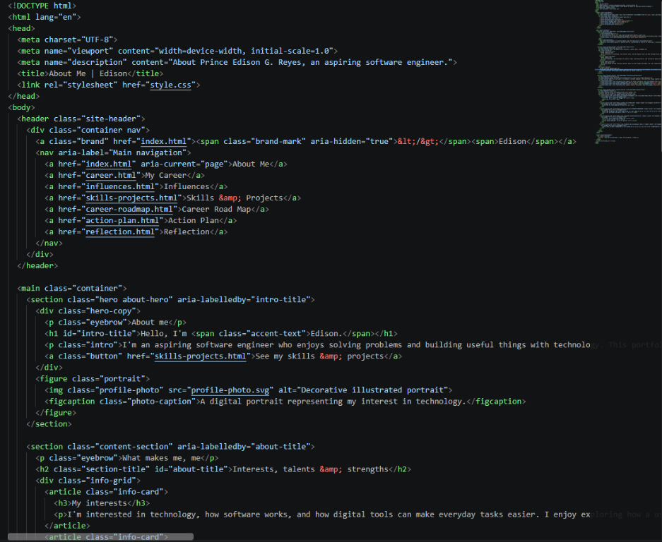
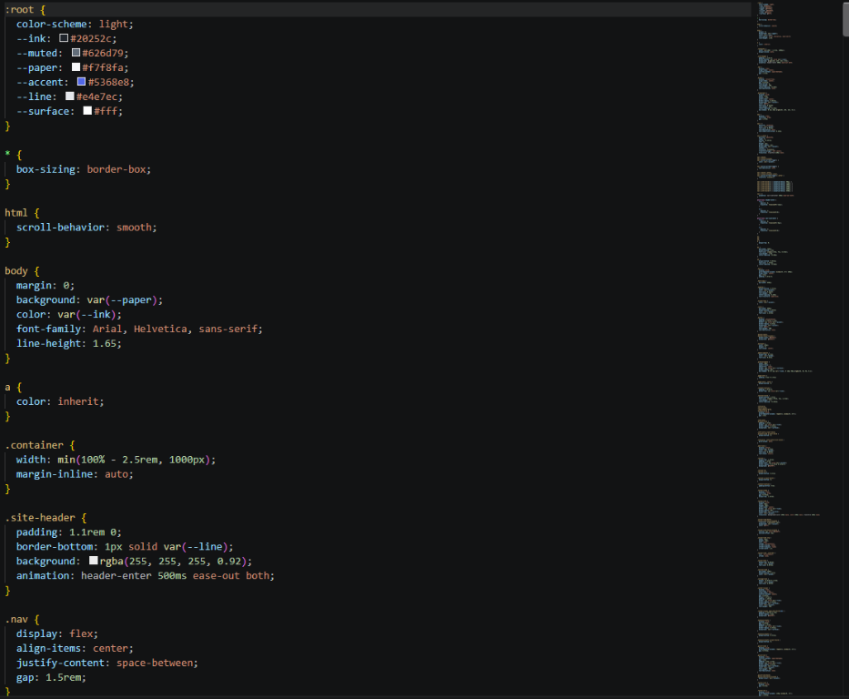
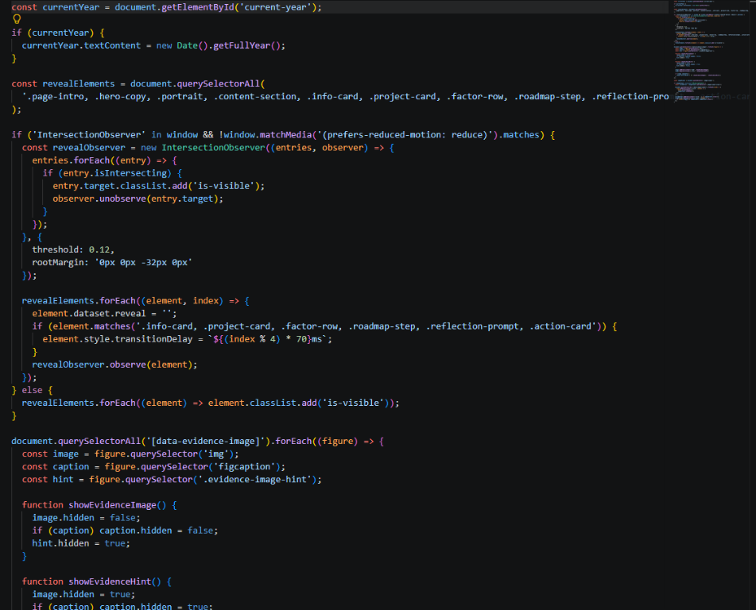
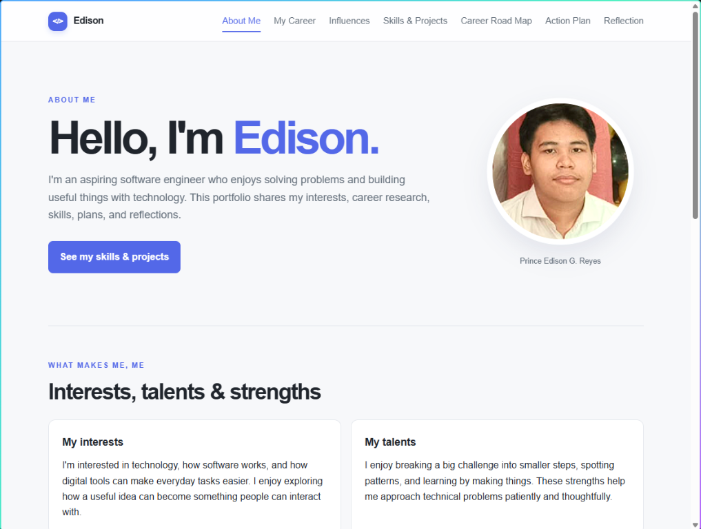
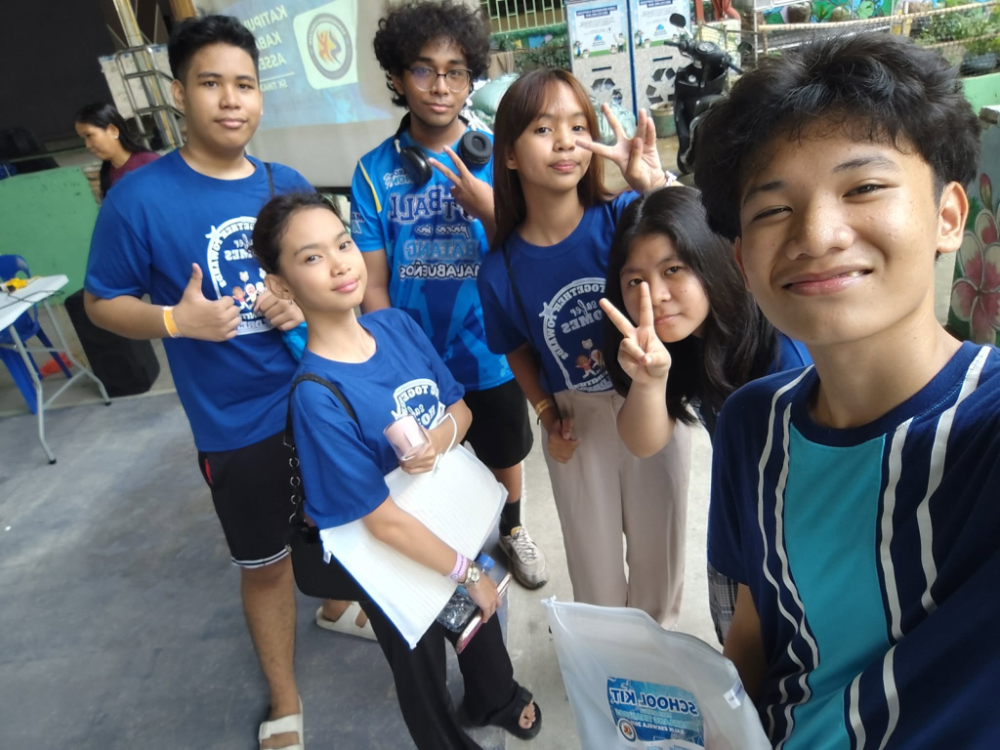

HTML structure
I used HTML to organize each portfolio page with headings, sections, navigation links, and other content so visitors can find information and move between pages.


What I can do
This page presents examples of the web skills represented in my portfolio, along with the finished files that provide evidence of the work.
Skills demonstrated
I used HTML to organize each portfolio page with headings, sections, navigation links, and other content so visitors can find information and move between pages.

I used CSS to style the portfolio's colors, spacing, cards, and page layouts, including adjustments that help the pages fit smaller screens.

I used JavaScript to keep the footer year current and add interactive features, including reveal animations and an on-page viewer for the evidence images.

Demonstrated work
The portfolio itself is the main completed digital output presented here. Its working pages and source files provide evidence that can be reviewed directly.
PROJECT 01
Project: A responsive multi-page portfolio that presents my background, chosen career, influences, skills, academic roadmap, action plan, and learner reflection.
What it demonstrates: A complete front-end output using HTML for content, CSS for layout and responsive design, and JavaScript for the current-year footer.
What I learned: A portfolio is easier to navigate when information is grouped by purpose and connected through consistent page links. Small details such as readable headings and mobile-friendly layouts improve usability.

PROJECT 02
Experience: As a member of CERO (Child Emergency Response Organization), I participate in child safety seminars and advocacy efforts that promote the protection and well-being of young people.
Skills demonstrated: Teamwork, communication, empathy, and active listening, developed through learning with other members and taking part in youth advocacy.
What I learned: Protecting young people is a shared responsibility. Seminars build understanding, while advocacy helps bring attention to the need for safe and supportive communities.
